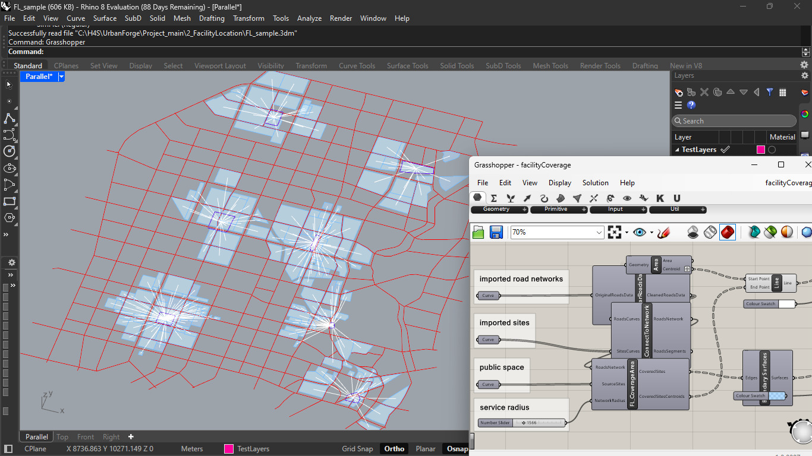
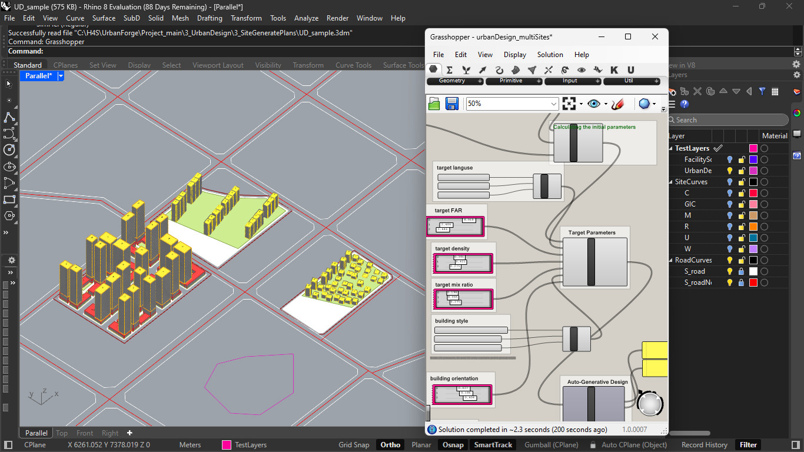
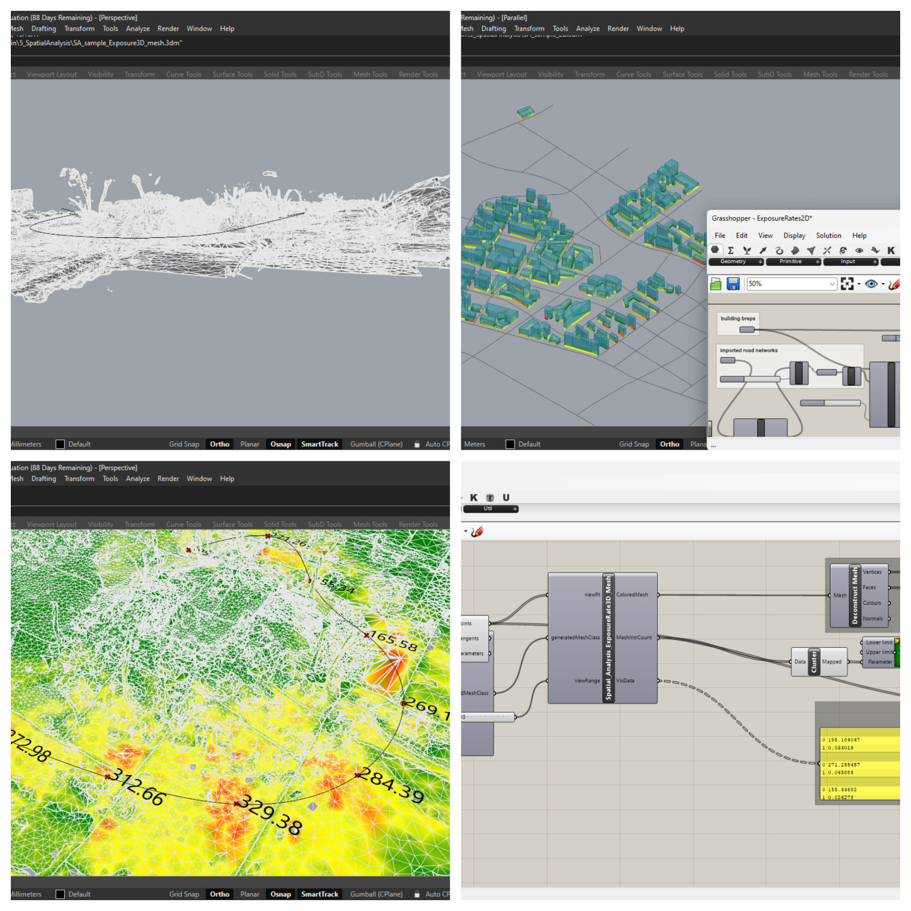
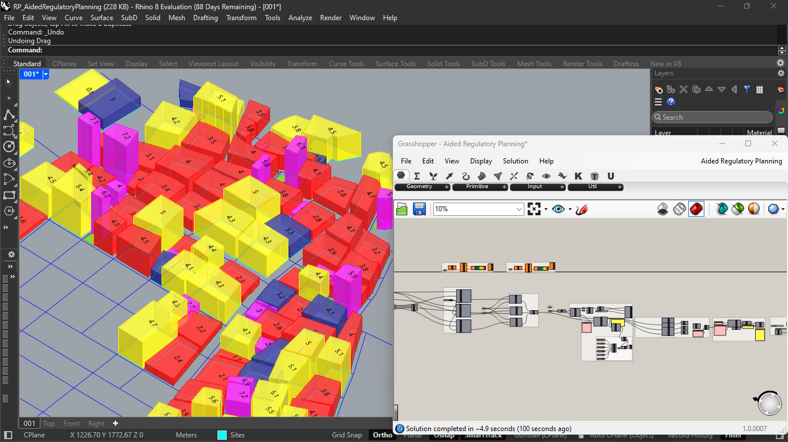

The Automatic Network Generation phase of my urban planning project establishes a city map based on input parameters—area for road density and road network levels with specified widths. This framework visually presents road availability and distances between blocks, forming a foundational structure for subsequent infrastructure planning.

In the Facility Coverage feature of my urban planning project, designated blocks from the initial map act as centers for facilities like hospitals, shopping complexes, and schools. Adjustable service radii personalize the impact analysis, revealing the extent of influence each facility has on surrounding blocks, facilitating informed urban development decisions.

The 3D City Building Generator, my project's next feature, transforms the initial map output into dynamic urban landscapes. Adjusting parameters like target distance, density, mix ratio, and styles, the system incorporates real-time changes, offering a generative model with diverse buildings inspired by specific cities, fostering flexible and responsive urban design.

The Exposure Rate Mesh feature offers two versions: one visualizes overall building exposure rates using color combinations on the 2D map generated from the first feature, and the second, in 3D, employs contours with color gradients (green to red) to represent exposure rates on the surface, enhancing comprehensive urban planning insights.

The Regulatory Planning feature introduces procedural building generation within a predefined map layout. It dynamically adjusts constraints to calculate road and site accessibility, perform clustering, allocate land use, and reallocate accessibility. Further, it considers Floor Area Ratio (FAR) allocation, offering a comprehensive view of the urban landscape. Visualizations with distinct color codes facilitate easy interpretation of road and site accessibility, clustering patterns, land use, and FAR allocation for informed regulatory decisions in urban planning.